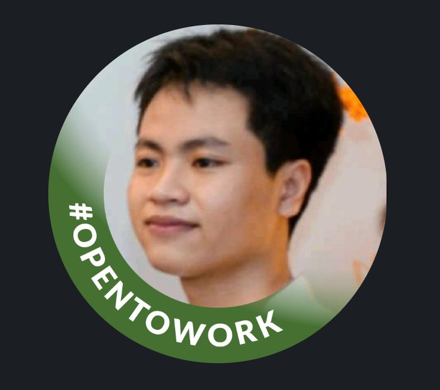

LUU DUC DAT
IoT / Embedded Firmware Developer
Embedded C/C++ · ESP32 · FreeRTOS · Edge AI
Career Objective
Software Engineering student with hands-on experience in Embedded C/C++, ESP32, FreeRTOS, and IoT system development. Experienced in developing firmware, integrating sensors and peripherals, and deploying Edge AI models on microcontrollers. Built a standalone Driver Drowsiness Detection System using ESP32-CAM and a Smart Home Security System. Seeking an IoT / Embedded Developer position to contribute reliable smart-home and embedded solutions while continuously strengthening embedded systems engineering skills.
Education & Academic Honors
Posts and Telecommunications Institute of Technology (PTIT) — HCMC Campus
December 2022 – Present
Bachelor of Engineering in Information Technology | Major: Software Engineering
- GPA: 3.1 / 4.0
- Honors & Scholarship: PTIT University-Level Academic Excellence Award & Merit Scholarship — Semester 1, Academic Year 2023–2024 (Awarded 12 Aug 2024).
- Relevant Coursework: Embedded Systems, IoT System Development, Data Structures and Algorithms, Object-Oriented Programming (OOP), Software Architecture.
Technical Skills
- Embedded Systems: Embedded C/C++, ESP32, FreeRTOS, GPIO, PWM, firmware development, firmware flashing and debugging.
- Hardware & IoT: ESP32-CAM, sensor and peripheral integration, PIR sensor, light sensor, IR LED, buzzer, servo motor, circuit assembly.
- Edge AI & TinyML: CNN model training, computer vision, on-device AI inference, Edge AI deployment on microcontrollers.
- Development Tools: Git, GitHub, VS Code, Postman, motionEye.
- Programming Languages: C/C++, Python, Java, SQL.
- Backend Technologies (Basic): Spring Boot, RESTful APIs, MySQL, PostgreSQL, Docker.
- Professional Skills: Hardware/software debugging, analytical problem-solving, technical presentation, teamwork and continuous learning.
Projects
Driver Drowsiness Detection System (DDS)
January 2026 – May 2026
Embedded Developer | ESP32-CAM, FreeRTOS, C/C++, CNN / Edge AI
- Developed a real-time driver drowsiness detection device using ESP32-CAM, including circuit assembly and firmware deployment.
- Trained a custom CNN model and deployed it directly on ESP32-CAM for on-device inference without relying on an external PC or server.
- Implemented image processing to crop the eyelid region, evaluate eye openness, and trigger a buzzer alert when crossing a predefined threshold.
- Integrated a light sensor to automatically activate 6 IR LEDs in low-light conditions, improving nighttime detection.
- Applied FreeRTOS to execute image capture, AI inference, and alerting tasks concurrently for responsive system operation.
Smart Home Security System with Pan-Tilt Camera
September 2025 – December 2025
IoT Developer | ESP32, PIR Sensor, Servo, motionEye
- Developed a smart-home security system featuring a camera mounted on two servo motors for horizontal and vertical movement.
- Integrated a PIR motion sensor with motion detection in motionEye to identify suspicious activity and reduce false alarms.
- Implemented automated security responses, including email notifications, image snapshots, and short video recordings when motion was detected.
Microservices-Based E-Commerce System
January 2026 – April 2026
Java Backend Developer | Academic Project
- Developed independent Product, Order, and User services using Spring Boot, Eureka, API Gateway, and JWT authentication.
Online Course Management RESTful API System
September 2025 – December 2025
Java Backend Developer | Course Project
- Developed RESTful APIs using Spring Boot and Hibernate, implemented unit tests, and documented API endpoints using Postman and Swagger.
Languages
- English: TOEIC 515/990
- Japanese: Basic communication (N5 level, JLPT not yet taken)